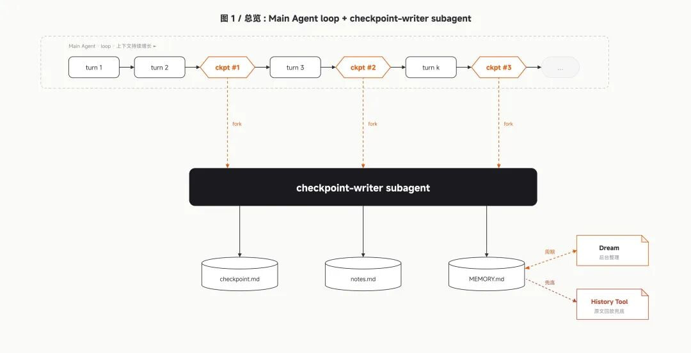
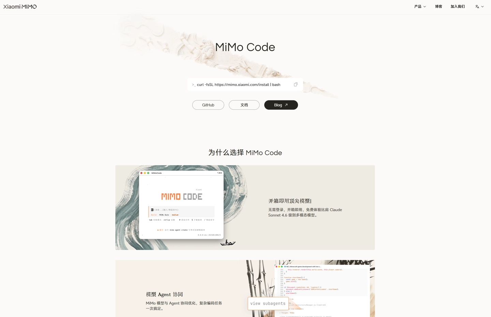

개요
Xiaomi는 오늘 새벽 터미널에서 구동되는 탐색형 AI 프로그래밍 도우미인 MiMo Code V0.1.0을 공식 발표하고 오픈소스로 공개했습니다.
기술적 특징
MiMo Code는 오픈소스 프로젝트인 OpenCode를 기반으로 2차 개발되었으며, MIT 라이선스를 따릅니다. 이 도구는 한정 기간 무료로 제공되는 멀티모달 모델 MiMo-V2.5를 내장하고 있으며, DeepSeek, Kimi, GLM 등 주요 모델 및 제3자 토큰 플랜을 지원하여 다양한 개발자의 요구사항을 충족합니다.
MiMo Code는 독창적인 지속 기억 시스템을 탑재했습니다. 프로젝트 기억, 세션 체크포인트, 작업 진행 상황이라는 세 가지 메커니즘을 통해 긴 대화 과정에서 정보가 누락되는 문제를 해결합니다. Xiaomi 측은 메인 에이전트가 업무에 집중하는 동안 독립적인 서브 에이전트(sub-agent)가 상태를 자동으로 저장하고 요약본을 생성하게 함으로써, 장기 세션에서도 일관된 품질을 유지하도록 설계했다고 밝혔습니다.
협업 및 워크플로우
MiMo Code는 MiMo 시리즈 모델에 최적화된 전용 Harness 시스템을 갖추고 있어 모델의 능력과 프레임워크가 긴밀하게 조화됩니다. 특히 'Compose' 모드를 통해 1+1보다 큰 시너지 효과를 제공합니다. 사용자가 Tab 키로 Compose 모드 전환 후 간단한 아이디어를 입력하면, 설계, 계획, 코딩, 테스트, 검토에 이르는 전 과정을 자동으로 수행하여 산업 수준의 결과물을 도출합니다.
또한 독특한 /dream 명령어가 포함되어 있습니다. 7일마다 자동 실행되는 이 기능은 독립적인 에이전트가 과거 대화와 기존 기억 파일을 읽어 중복을 제거하고 압축하며, 현재 상태를 간결하게 업데이트합니다. 이를 통해 MiMo Code는 매번 처음부터 시작하는 것이 아니라 프로젝트에 대한 이해도를 바탕으로 지속적으로 성장합니다.
사용자 편의성
MiMo Code는 MiMo-V2.5-ASR 기술을 활용한 음성 입력 및 제어 기능을 지원합니다. 사용자는 음성으로 잘못된 명령을 수정하거나 "전송", "실행"과 같은 동작 명령을 직접 내릴 수 있어, 입력부터 조작까지 키보드 조작 없이도 원활하게 진행할 수 있습니다.
설치 및 주요 기능
설치 및 시작 방법은 다음과 같습니다.
- Mac 및 Linux 사용자 권장: curl -fsSLhttps://mimo.xiaomi.com/install | bash
- Windows 사용자 권장(npm 사용): npm install -g @mimo-ai / cli
설치 후 터미널에 mimo를 입력하여 시작할 수 있습니다. 최적의 경험을 위해 Mac 사용자는 iTerm 또는 VS Code 터미널 환경에서 사용하는 것을 권장합니다.
- MiMo-V2.5 한정 기간 무료 채널 내장 (별도 등록 불필요)
- DeepSeek, Kimi, GLM 등 주요 모델 API 및 제3자 토큰 플랜 호환
- 모든 설정 항목의 중국어 지원으로 로컬 환경에 최적화
- TUI 페이지 우측에 상시 상태바를 배치하여 작업 진행 상황을 실시간 확인 가능
총평
Xiaomi가 공개한 MiMo Code는 강력한 기억 시스템과 자동화된 워크플로우를 결합하여 개발자의 생산성을 극대화하는 터미널 기반 AI 도구입니다. 특히 멀티모달 모델 지원, 음성 제어 기능, 그리고 독창적인 /dream 명령을 통한 지식 축적 기능이 돋보이는 완성도 높은 솔루션입니다.
产品发布与核心架构
Xiaomi MiMo 官方正式发布并开源 MiMo Code V0.1.0。这是一款运行在终端中的探索性 AI 编程助手，基于开源项目 OpenCode 二次开发，并采用 MIT 协议开源。该工具旨在为开发者提供高效的命令行交互式编程体验。
MiMo Code 支持多种模型接入方案：
- 内置限时免费的多模态模型 MiMo-V2.5；
- 支持集成 DeepSeek、Kimi 和 GLM 等主流模型；
- 支持第三方 Token Plan。
核心技术特性
MiMo Code 引入了多项创新机制来提升长程对话的稳定性与效率：
- 持久记忆系统： 通过项目记忆、会话检查点、任务进度三重机制，解决长篇幅对话中 AI 容易遗忘关键信息的问题。
- Sub-agent 架构： 采用主 agent 执行任务、独立 sub-agent 负责记录状态的思路，在窗口接近上限时自动生成简报并重建上下文。
- Harness 与 Compose 模式： 通过专属 Harness 系统让模型能力与框架深度配合；用户可通过按 Tab 键进入 Compose 模式，实现从设计、规划、编码到测试、审查的全流程自动化。
特色功能与交互
MiMo Code 提供了一些独特的交互式功能以增强用户体验：
- /dream 命令： 每 7 天自动触发一次，由独立 Agent 对历史会话和记忆文件进行合并、去重、验证及压缩，确保全局记忆的紧凑与准确。
- 语音输入与控制： 搭载 MiMo-V2.5-ASR 能力，支持用户通过语音修改指令或执行“发送”、“执行”等操作命令，实现免键盘操作。
安装与配置说明
MiMo Code 提供多种安装方式并支持全中文界面：
- Mac 和 Linux 用户： 推荐使用 curl 命令：curl -fsSLhttps://mimo.xiaomi.com/install | bash
- Windows 用户： 建议通过 npm 安装：npm install -g @mimo-ai / cli
- 界面与本地化： 支持全中文汉化，并提供 TUI 页面右侧常驻状态看板，方便用户实时监控工作进度。
总结
Xiaomi 推出的 MiMo Code 是一个功能丰富的开源终端 AI 编程助手，通过独特的持久记忆系统和 sub-agent 架构解决了长对话的上下文丢失问题。它集成了多模型支持、语音控制以及自动化 Compose 工作流，旨在为开发者提供从设计到交付的全流程辅助工具。
概要
Xiaomiは本日、ターミナルで動作する探索型AIプログラミングアシスタント「MiMo Code V0.1.0」を公式に発表し、オープンソースとして公開しました。
技術的特徴
MiMo CodeはオープンソースプロジェクトであるOpenCodeをベースに二次開発されたもので、MITライセンスに従っています。このツールには、期間限定で無料提供されるマルチモーダルモデル「MiMo-V2.5」が内蔵されており、DeepSeek、Kimi、GLMなどの主要なモデルやサードパーティのトークンプランにも対応しており、多様な開発者のニーズを満たします。
MiMo Codeは独自の持続的記憶システムを搭載しています。「プロジェクトの記憶」「セッションのチェックポイント」「作業の進捗状況」という3つのメカニズムにより、長時間の対話において情報が欠落する問題を解決します。Xiaomi側は、メインエージェントが業務に集中する一方で、独立したサブエージェント（sub-agent）が状態を自動的に保存し要約を作成することで、長期セッションにおいても一貫した品質を維持するように設計されたと述べています。
協力およびワークフロー
MiMo Codeは、MiMoシリーズのモデルに最適化された専用のHarnessシステムを備えており、モデルの能力とフレームワークが密接に調和しています。特に「Compose」モードを通じて、1+1以上の相乗効果を提供します。ユーザーがTabキーでComposeモードに切り替えた後、簡単なアイデアを入力するだけで、設計、計画、コーディング、テスト、レビューに至る全工程を自動的に実行し、産業レベルの結果を導き出します。
さらに、独自の「/dream」コマンドが含まれています。この機能は7日ごとに自動実行され、独立したエージェントが過去の会話や既存の記憶ファイルを読み取って重複を除去・圧縮し、現在の状態を簡潔に更新します。これにより、MiMo Codeは毎回最初からやり直すのではなく、プロジェクトに対する理解度に基づいて継続的に成長します。
ユーザーの利便性
MiMo Codeは、MiMo-V2.5-ASR技術を活用した音声入力および制御機能をサポートしています。ユーザーは音声で誤ったコマンドを修正したり、「送信」や「実行」といった動作命令を直接出したりすることができ、入力から操作までキーボード操作なしでスムーズに進めることができます。
インストールおよび主な機能
インストールおよび開始方法は以下の通りです。
- MacおよびLinuxユーザー推奨: curl -fsSLhttps://mimo.xiaomi.com/install | bash
- Windowsユーザー推奨（npm使用）: npm install -g @mimo-ai / cli
インストール後、ターミナルで「mimo」と入力することで開始できます。最適な体験のために、MacユーザーはiTermまたはVS Codeのターミナル環境での使用を推奨します。
- MiMo-V2.5 期間限定無料チャネル内蔵（別途登録不要）
- DeepSeek、Kimi、GLMなどの主要モデルAPIおよびサードパーティのトークンプランに対応
- すべての設定項目で中国語をサポートし、ローカル環境に最適化
- TUIページの右側に常時ステータスバーを配置し、作業の進捗状況をリアルタイムで確認可能
総評
Xiaomiが公開したMiMo Codeは、強力な記憶システムと自動化されたワークフローを組み合わせることで、開発者の生産性を最大化するターミナルベースのAIツールです。特にマルチモーダルモデルのサポート、音声制御機能、そして独自の「/dream」コマンドによる知識蓄積機能など、完成度の高いソリューションとなっています。
まとめ
Xiaomiが公開したMiMo Codeは、高度な記憶システムと自動化されたワークフローを備えたターミナルベースのAIプログラミング支援ツールです。マルチモーダルモデルの統合や音声操作、独自の「/dream」コマンドによる知識蓄積機能により、開発者の生産性を大幅に向上させる設計となっています。
Overview
Xiaomi has officially announced and open-sourced MiMo Code V0.1.0, an exploratory AI programming assistant that operates within a terminal environment.
Technical Features
Developed as a secondary project based on the OpenCode open-source project, MiMo Code follows the MIT license. The tool features the MiMo-V2.5 multimodal model (available for free for a limited period) and supports major models such as DeepSeek, Kimi, and GLM, along with third-party token plans to accommodate various developer requirements.
MiMo Code is equipped with a unique persistent memory system. It addresses the issue of information loss during long conversations through three mechanisms: project memory, session checkpoints, and task progress. Xiaomi stated that while the main agent focuses on the primary task, independent sub-agents are designed to automatically save states and generate summaries, ensuring consistent quality even in long-running sessions.
Collaboration and Workflow
MiMo Code features a dedicated Harness system optimized for MiMo series models, ensuring a close integration between model capabilities and framework. In particular, the "Compose" mode provides significant synergy; after switching to Compose mode via the Tab key, users can input simple ideas to trigger an automated process encompassing design, planning, coding, testing, and review to produce industrial-grade results.
Additionally, it includes a unique "/dream" command. This feature runs automatically every seven days, where independent agents read past conversations and existing memory files to remove duplicates, compress data, and update the current state concisely. This allows MiMo Code to continuously grow its understanding of a project rather than starting from scratch each time.
User Convenience
MiMo Code supports voice input and control using MiMo-V2.5-ASR technology. Users can use their voices to correct incorrect commands or issue direct action commands such as "send" or "execute," allowing for smooth operation from input to execution without relying solely on keyboard inputs.
Installation and Key Features
The installation and startup methods are as follows:
- Recommended for Mac and Linux users: curl -fsSLhttps://mimo.xiaomi.com/install | bash
- Recommended for Windows users (using npm): npm install -g @mimo-ai / cli
After installation, you can start the tool by typing "mimo" in the terminal. For the best experience, Mac users are recommended to use it within iTerm or a VS Code terminal environment.
- Built-in MiMo-V2.5 limited-time free channel (no separate registration required)
- Compatible with major model APIs such as DeepSeek, Kimi, and GLM, as well as third-party token plans
- All configuration items support Chinese to optimize for local environments
- A status bar is placed on the right side of the TUI page to allow real-time monitoring of task progress
Summary
Xiaomi's MiMo Code is a terminal-based AI tool that enhances developer productivity by combining a robust memory system with automated workflows. It stands out for its multimodal model support, voice control capabilities, and the unique "/dream" command designed to accumulate project knowledge over time.
产品发布与核心架构
Xiaomi MiMo 正式开源 MiMo Code V0.1.0，这是一款运行在终端中的探索性 AI 编程助手。该项目基于 OpenCode 二次开发并采用 MIT 协议。
- 内置模型：MiMo-V2.5（限时免费）
- 兼容模型：支持接入 DeepSeek、Kimi 和 GLM 等主流模型，以及第三方 Token Plan
核心技术特性
MiMo Code 通过创新的架构设计解决长对话中的信息遗忘问题，并提供高度自动化的开发流程：
- 持久记忆系统：通过项目记忆、会话检查点、任务进度三重机制，利用独立 subagent 自动保存状态，确保在长程会话中不丢失关键信息。
- Compose 模式：用户只需按 Tab 键即可进入该模式，AI 将自动完成从设计、规划到编码、测试、审查的完整全流程。
- /dream 命令：每 7 天自动触发一次，由独立 Agent 对历史会话和记忆文件进行合并、去重及压缩，确保项目理解的持续成长。
交互功能与安装指南
MiMo Code 支持全面中文汉化，并提供 TUI 界面状态看板以及语音控制功能。
- 语音功能：采用 MiMo-V2.5-ASR 技术，支持口头修改指令及“发送”、“执行”等操作命令。
- Mac 和 Linux 安装：curl -fsSLhttps://mimo.xiaomi.com/install | bash
- Windows 安装：npm install -g @mimo-ai / cli
- 启动方式：安装后在终端输入 mimo 即可启动。
总结
Xiaomi 推出的 MiMo Code 是一个基于开源项目并支持多种主流模型的终端 AI 编程助手。它通过独特的持久记忆系统、Compose 模式和语音控制功能，旨在为开发者提供更高效、自动化且具备持续成长能力的全流程开发体验。
概要
Xiaomiは本日、ターミナルで動作する探索型AIプログラミングアシスタント「MiMo Code V0.1.0」を公式発表し、オープンソースとして公開しました。
技術的特徴
MiMo CodeはオープンソースプロジェクトであるOpenCodeをベースに二次開発されており、MITライセンスに従っています。このツールには期間限定で無料で提供されるマルチモーダルモデル「MiMo-V2.5」が内蔵されており、DeepSeek、Kimi、GLMなどの主要なモデルやサードパーティのトークンプランにも対応しており、多様な開発者の要求を満たすことができます。
MiMo Codeは独自の継続記憶システムを搭載しています。プロジェクトの記憶、セッションのチェックポイント、作業の進捗という3つのメカニズムを通じて、長い対話過程で情報が欠落する問題を解決します。Xiaomi側は、メインエージェントが業務に集中する間、独立したサブエージェント（sub-agent）が状態を自動的に保存し要約を作成させることで、長期セッションにおいても一貫した品質を維持するように設計されたと述べています。
連携とワークフロー
MiMo CodeはMiMoシリーズのモデルに最適化された専用のHarnessシステムを備えており、モデルの能力とフレームワークが密接に調和しています。特に「Compose」モードを通じて、1+1以上の相乗効果を提供します。ユーザーがTabキーでComposeモードに切り替えた後、簡単なアイデアを入力するだけで、設計、計画、コーディング、テスト、レビューに至る全工程を自動的に実行し、産業レベルの結果を導き出します。
また、独自の「/dream」コマンドが含まれています。7日ごとに自動実行されるこの機能は、独立したエージェントが過去の会話と既存の記憶ファイルを読み取り、重複を排除して圧縮し、現在の状態を簡潔に更新します。これにより、MiMo Codeは毎回最初からやり直すのではなく、プロジェクトに対する理解度に基づいて継続的に成長します。
ユーザーの利便性
MiMo CodeはMiMo-V2.5-ASR技術を活用した音声入力および制御機能をサポートしています。ユーザーは音声で誤ったコマンドを修正したり、「送信」や「実行」といった動作命令を直接出したりすることができ、入力から操作までキーボード操作なしでスムーズに進めることができます。
インストールと主な機能
インストールおよび開始方法は以下の通りです。
- MacおよびLinuxユーザー推奨: curl -fsSLhttps://mimo.xiaomi.com/install | bash
- Windowsユーザー推奨（npm使用）: npm install -g @mimo-ai / cli
インストール後、ターミナルに「mimo」と入力して開始できます。最適な体験を得るため、MacユーザーはiTermまたはVS Codeのターミナル環境での使用を推奨します。
- MiMo-V2.5の期間限定無料チャネルを内蔵（別途登録不要）
- DeepSeek、Kimi、GLMなどの主要モデルAPIおよびサードパーティのトークンプランに対応
- すべての設定項目で中国語をサポートし、ローカル環境に最適化
- TUIページ右側に常時ステータスバーを配置し、作業の進行状況をリアルタイムで確認可能
総評
Xiaomiが公開したMiMo Codeは、強力な記憶システムと自動化されたワークフローを組み合わせ、開発者の生産性を最大化するターミナルベースのAIツールです。特にマルチモーールモデルのサポート、音声制御機能、そして独自の「/dream」コマンドによる知識蓄積機能により、非常に完成度の高いソリューションとなっています。
まとめ
Xiaomiが公開したMiMo Codeは、高度な記憶システムと自動化されたワークフローを備えたターミナルベースのAIプログラミングアシスタントです。マルチモーダルモデルのサポートや音声操作、独自の知識蓄積機能により、開発者の生産性を大幅に向上させる設計となっています。
Overview
Xiaomi officially announced and open-sourced MiMo Code V0.1.0 today. It is an exploratory AI programming assistant that operates within the terminal environment.
Technical Features
MiMo Code was developed as a secondary project based on the open-source project OpenCode and follows the MIT license. The tool features the multimodal model MiMo-V2.5, which is provided for free for a limited period. It also supports major models such as DeepSeek, Kimi, and GLM, along with third-party token plans to meet various developer requirements.
MiMo Code incorporates a unique persistent memory system. It addresses the issue of information loss during long conversations through three mechanisms: project memory, session checkpoints, and task progress tracking. Xiaomi stated that while the main agent focuses on the primary task, independent sub-agents automatically save states and generate summaries to maintain consistent quality even in long-running sessions.
Collaboration and Workflow
MiMo Code features a dedicated Harness system optimized for MiMo series models, ensuring a close integration between the model's capabilities and the framework. In particular, the "Compose" mode provides synergy greater than the sum of its parts. After switching to Compose mode via the Tab key, users can input simple ideas, and the tool will automatically perform the entire process—including design, planning, coding, testing, and review—to produce industrial-grade results.
Additionally, it includes a unique "/dream" command. This feature runs automatically every seven days, where an independent agent reads past conversations and existing memory files to remove redundancies, compress data, and update the current state concisely. This allows MiMo Code to grow continuously based on its understanding of the project rather than starting from scratch each time.
User Convenience
MiMo Code supports voice input and control features utilizing MiMo-V2.5-ASR technology. Users can use their voices to correct incorrect commands or issue direct action commands such as "send" or "execute," allowing for a smooth workflow from input to operation without relying solely on keyboard interaction.
Installation and Key Features
The installation and startup methods are as follows:
- Recommended for Mac and Linux users: curl -fsSLhttps://mimo.xiaomi.com/install | bash
- Recommended for Windows users (using npm): npm install -g @mimo-ai / cli
After installation, you can start the tool by typing "mimo" in the terminal. For the best experience, Mac users are recommended to use it within an iTerm or VS Code terminal environment.
- Built-in MiMo-V2.5 limited-time free channel (no separate registration required)
- Compatible with major model APIs such as DeepSeek, Kimi, and GLM, along with third-party token plans
- Support for Chinese in all settings to optimize the local environment
- A persistent status bar is placed on the right side of the TUI page to allow real-time tracking of task progress
Summary
MiMo Code is a terminal-based AI tool from Xiaomi that enhances developer productivity through a robust memory system and automated workflows. It stands out by offering multimodal model support, voice control capabilities, and a unique "/dream" command for continuous knowledge accumulation.
产品发布与开源
Xiaomi MiMo 正式发布并开源 MiMo Code V0.1.0。这是一款运行在终端中的探索性 AI 编程助手，基于 OpenCode 项目二次开发，并采用 MIT 协议开源。
核心技术特性
MiMo Code 通过多种创新机制解决长程对话的稳定性问题：
- 持久记忆系统：通过项目记忆、会话检查点、任务进度三重机制，确保在百轮以上的长程会话中不丢失关键信息。
- Compose 模式：用户可通过按 Tab 键切换到该模式，让 AI 自动完成从设计、规划、编码到测试、审查的完整工业级流程。
- /dream 命令：每 7 天自动触发一次，由独立 Agent 对历史会话进行合并、去重和压缩，将分散记忆转化为紧凑的当前状态。
模型支持与交互功能
MiMo Code 在模型兼容性与用户体验上提供以下支持：
- 内置 MiMo-V2.5 模型（限时免费），并兼容 DeepSeek、Kimi 和 GLM 等主流模型及第三方 Token Plan。
- 语音交互：集成 MiMo-V2.5-ASR 语音识别能力，支持通过口头指令修改或执行操作。
- 本地化优化：提供全面的中文汉化设置，并在 TUI 页面右侧配备常驻状态看板。
安装与部署
MiMo Code 支持多种平台的快速安装方式：
- Mac 和 Linux 用户：推荐使用 curl 命令进行安装。
- Windows 用户：支持通过 npm 安装。
- 启动方式：安装完成后，在终端输入 mimo 即可启动。
总结
MiMo Code 是由 Xiaomi 推出的开源终端 AI 编程助手，具备独特的持久记忆系统和全流程自动化 Compose 模式。它集成了多种主流模型支持与语音控制功能，旨在为开发者提供一个高效、稳定且高度自动化的编程辅助工具。
概要
Xiaomiは本日、ターミナル上で動作する探索型AIプログラミングアシスタント「MiMo Code V0.1.0」を公式に発表し、オープンソースとして公開しました。
技術的特徴
MiMo CodeはオープンソースプロジェクトであるOpenCodeをベースに二次開発されたもので、MITライセンスに従っています。このツールには、期間限定で無料提供されるマルチモーダルモデル「MiMo-V2.5」が内蔵されており、DeepSeek、Kimi、GLMなどの主要なモデルやサードパーティのトークンプランにも対応しており、多様な開発者のニーズを満たします。
MiMo Codeは独自の持続的記憶システムを搭載しています。「プロジェクトの記憶」「セッションのチェックポイント」「作業の進捗状況」という3つのメカニズムにより、長時間の対話において情報が欠落する問題を解決します。Xiaomi側は、メインエージェントが業務に集中する一方で、独立したサブエージェント（sub-agent）が状態を自動的に保存し要約を作成することで、長期セッションにおいても一貫した品質を維持するように設計されたと述べています。
連携とワークフロー
MiMo Codeは、MiMoシリーズのモデルに最適化された専用のHarnessシステムを備えており、モデルの能力とフレームワークが密接に調和しています。特に「Compose」モードを通じて、1+1以上の相乗効果を提供します。ユーザーがTabキーでComposeモードに切り替えた後、簡単なアイデアを入力するだけで、設計、計画、コーディング、テスト、レビューに至る全工程を自動的に実行し、産業レベルの結果を導き出します。
さらに、独自の「/dream」コマンドが含まれています。この機能は7日ごとに自動実行され、独立したエージェントが過去の会話や既存の記憶ファイルを読み取って重複を除去・圧縮し、現在の状態を簡潔に更新します。これにより、MiMo Codeは毎回最初からやり直すのではなく、プロジェクトに対する理解度に基づいて継続的に成長します。
ユーザーの利便性
MiMo Codeは、MiMo-V2.5-ASR技術を活用した音声入力および制御機能をサポートしています。ユーザーは音声で誤ったコマンドを修正したり、「送信」や「実行」といった動作命令を直接出したりすることができ、入力から操作までキーボード操作なしでスムーズに進めることができます。
インストールおよび主な機能
インストールおよび開始方法は以下の通りです。
- MacおよびLinuxユーザー推奨: curl -fsSLhttps://mimo.xiaomi.com/install | bash
- Windowsユーザー推奨（npm使用）: npm install -g @mimo-ai / cli
インストール後、ターミナルで「mimo」と入力することで開始できます。最適な体験のために、MacユーザーはiTermまたはVS Codeのターミナル環境での使用を推奨します。
- MiMo-V2.5 期間限定無料チャネル内蔵（別途登録不要）
- DeepSeek、Kimi、GLMなどの主要モデルAPIおよびサードパーティのトークンプランに対応
- すべての設定項目で中国語をサポートし、ローカル環境に最適化
- TUIページの右側に常時ステータスバーを配置し、作業の進捗状況をリアルタイムで確認可能
総評
Xiaomiが公開したMiMo Codeは、強力な記憶システムと自動化されたワークフローを組み合わせることで、開発者の生産性を最大化するターミナルベースのAIツールです。特にマルチモーダモデルのサポート、音声制御機能、そして独自の「/dream」コマンドによる知識蓄積機能など、完成度の高いソリューションとなっています。
まとめ
Xiaomiが公開したMiMo Codeは、高度な記憶システムとサブエージェント構造を採用し、長時間の対話におけるコンテキストの喪失を防ぐターミナルベースのAIプログラミング支援ツールです。マルチモーダルモデルの統合や音声操作、自動化された「Compose」ワークフローを備えており、設計からテストまでの一連の工程を効率化する高度なソリューションとなっています。
Overview
Xiaomi has officially announced and open-sourced MiMo Code V0.1.0, an exploratory AI programming assistant that operates within a terminal environment.
Technical Features
Developed as a secondary project based on the OpenCode open-source project, MiMo Code is released under the MIT license. The tool features an integrated multimodal model, MiMo-V2.5 (available for free for a limited time), and supports major models such as DeepSeek, Kimi, and GLM, along with third-party token plans to accommodate various developer requirements.
MiMo Code is equipped with a unique persistent memory system designed to solve the issue of information loss during long conversations. This is achieved through three mechanisms: project memory, session checkpoints, and task progress. Xiaomi stated that while the main agent focuses on tasks, independent sub-agents automatically save states and generate summaries, ensuring consistent quality even in long sessions.
Collaboration and Workflow
MiMo Code features a dedicated Harness system optimized for MiMo series models, ensuring a close harmony between model capabilities and the framework. Specifically, the "Compose" mode provides significant synergy; after switching to Compose mode via the Tab key, users can input simple ideas to trigger an automated process covering design, planning, coding, testing, and review to produce industrial-grade results.
The tool also includes a unique "/dream" command. This feature automatically executes every seven days, where an independent agent reads past conversations and existing memory files to remove duplicates, compress data, and update the current status concisely. This allows MiMo Code to grow its understanding of a project over time rather than starting from scratch each session.
User Convenience
MiMo Code supports voice input and control powered by MiMo-V2.5-ASR technology. Users can use voice commands to correct incorrect instructions or issue direct action commands such as "send" or "execute," allowing for a smooth workflow from input to operation without relying solely on keyboard interaction.
Installation and Key Features
The installation methods are as follows:
- Mac and Linux users: curl -fsSLhttps://mimo.xiaomi.com/install | bash
- Windows users (via npm): npm install -g @mimo-ai / cli
After installation, the tool can be started by typing "mimo" in the terminal. For the best experience, Mac users are recommended to use it within iTerm or a VS Code terminal environment.
- Built-in MiMo-V2.5 limited-time free channel (no registration required)
- Compatible with major model APIs like DeepSeek, Kimi, and GLM, as well as third-party token plans
- Full Chinese language support for all settings to optimize local environments
- A persistent status bar on the right side of the TUI page allows users to monitor progress in real-time
Summary
Xiaomi's MiMo Code is a terminal-based AI tool that maximizes developer productivity through a robust memory system and automated workflows. It distinguishes itself with multimodal model support, voice control capabilities, and the unique "/dream" command for continuous knowledge accumulation.


